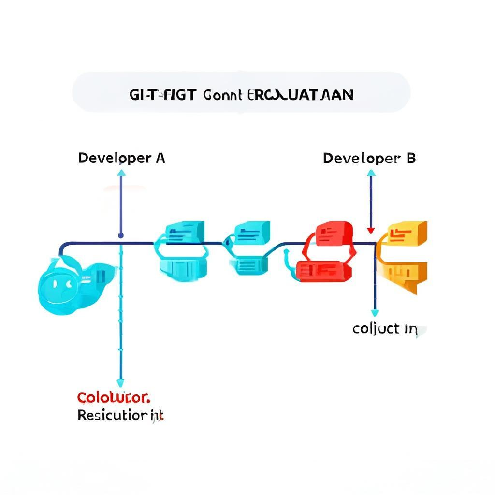

处理合并冲突
当两个分支修改同一文件的同一部分时，会产生冲突
1. 发现冲突
Git 会在冲突文件中标记冲突区域
2. 手动解决
编辑文件，选择保留的更改内容
3. 标记解决
git add 将解决后的文件加入暂存区
4. 完成合并
git commit 提交合并结果

当两个分支修改同一文件的同一部分时，会产生冲突
Git 会在冲突文件中标记冲突区域
编辑文件，选择保留的更改内容
git add 将解决后的文件加入暂存区
git commit 提交合并结果

12 / 15